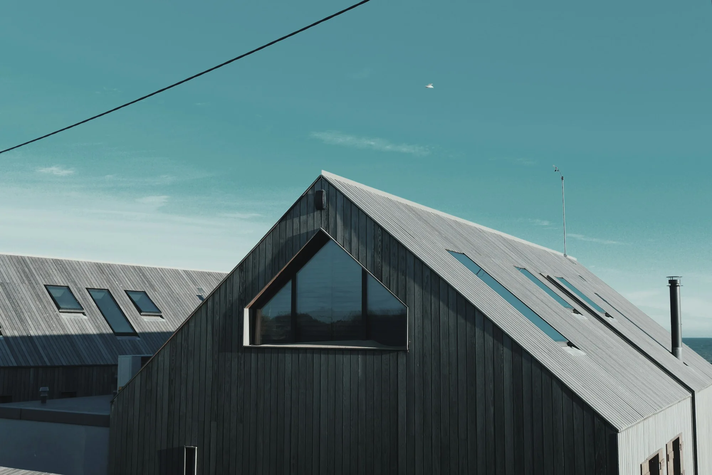
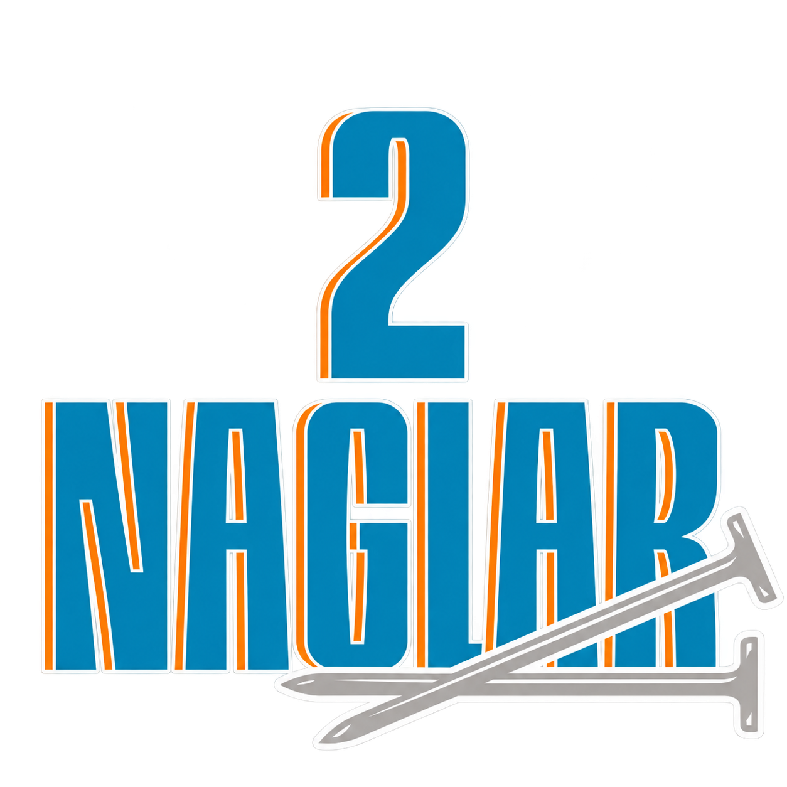
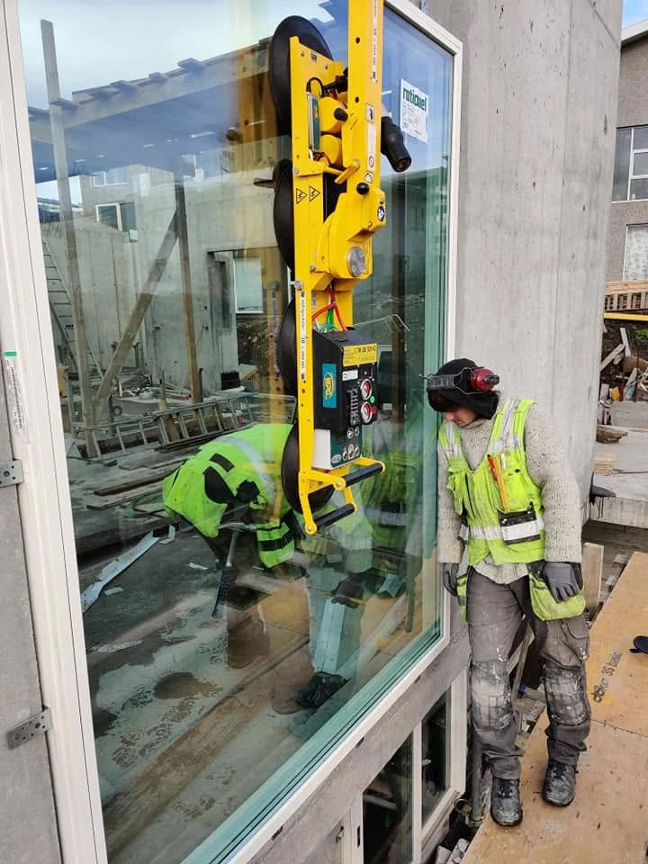
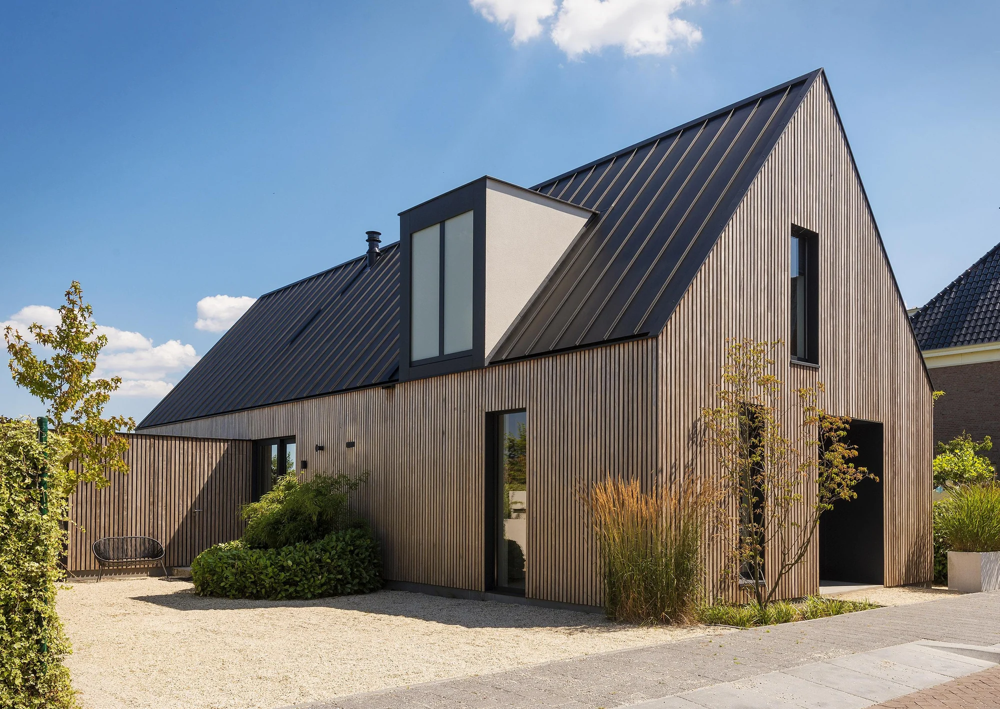
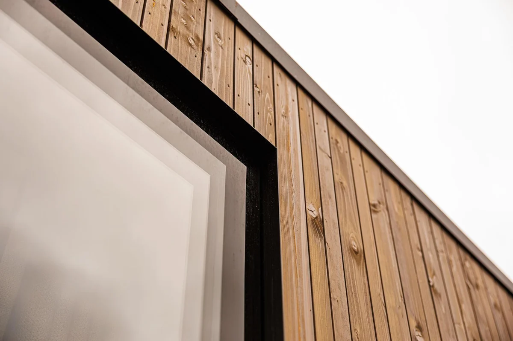
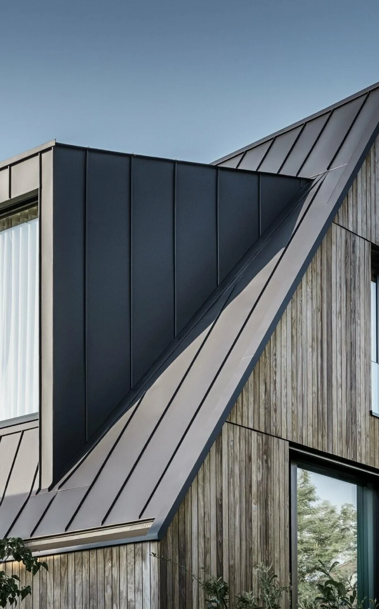

Þjónusta — húsið, hluti fyrir hluta.

Gluggaskipti
Við skiptum um glugga og setjum glugga í nýbyggingar.
Ræðum gluggaskiptinÞakskipti
Við tökum að okkur þakskipti og viðhald þaka.
Ræðum þakiðHúsaklæðningar
Við klæðum nýbyggingar og endurnýjum eldri klæðningar.
Ræðum klæðningunaEinnig almenn smíðavinna,
nýsmíði og viðhaldsverk.
Einnig almenn smíðavinna, nýsmíði og viðhaldsverk.
Verkin okkar.
Frá heild að smáatriðum.



Úr verkefnasögu 2 Nagla
Kársnesskóli
Utanhússklæðning og pallar. Svansvottað verkefni.
Þjóðkirkjan
Klæðning, gluggar, þak og pallar við prestbústað í Kjós. Klæðning og þak á prestbústað í Mosfellsdal. Gluggaísetning í Skálholti.
BYKO
Uppsetning sýningarskála með nýju klæðningarkerfi á Verk & Vit.
Bríet fasteignafélag
Gluggaskipti og húsaklæðning.
Fleiri verkefni
Byggingafélag Bestla — gluggaísetning í fjölbýlishúsi.